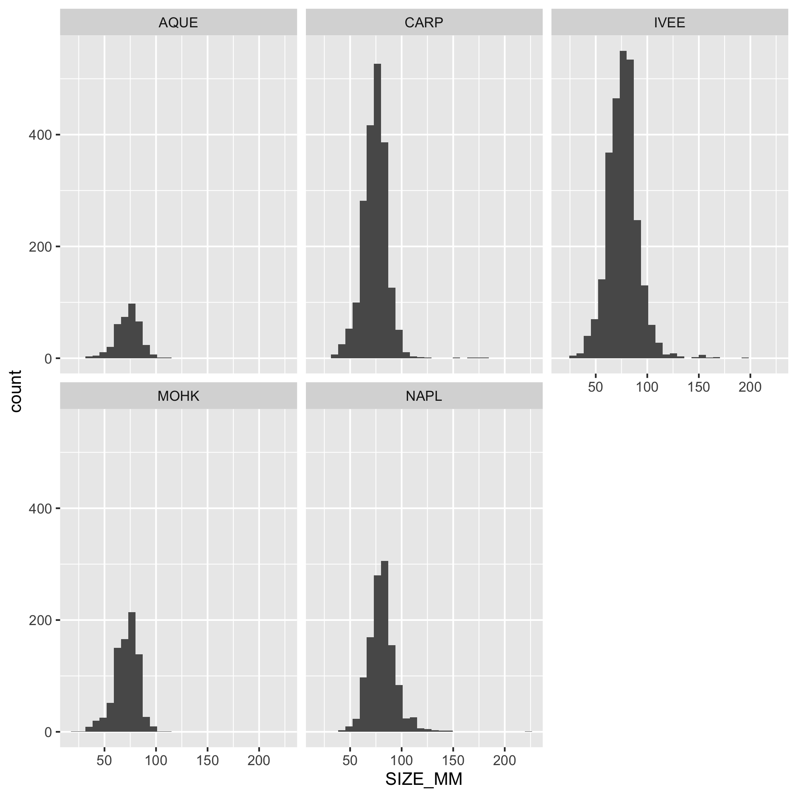
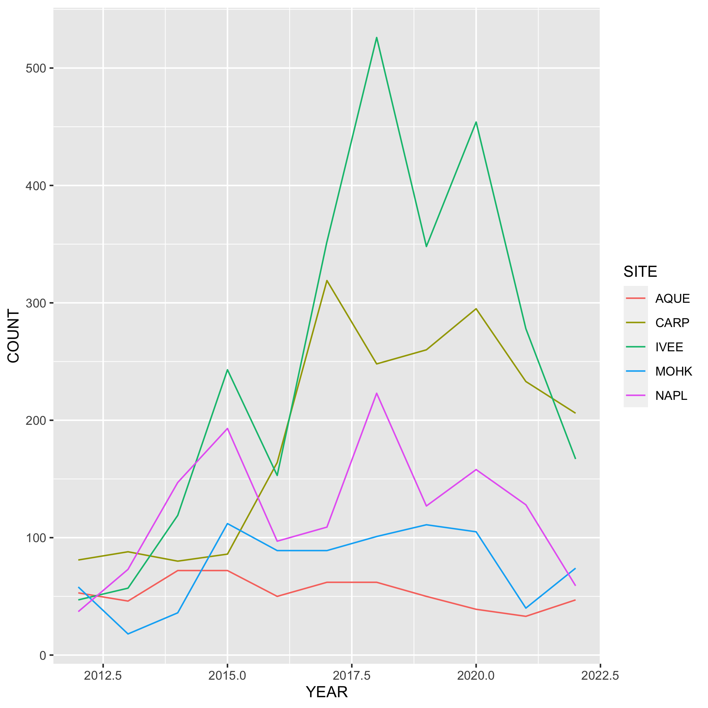
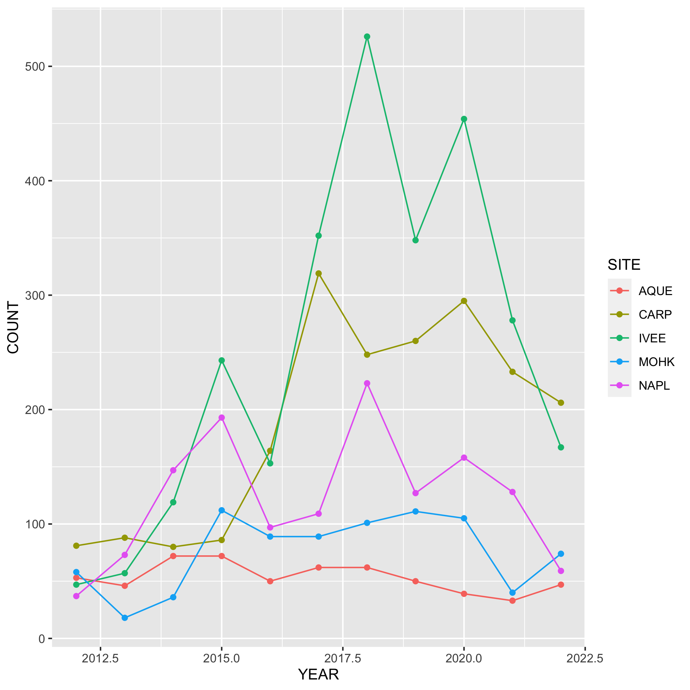
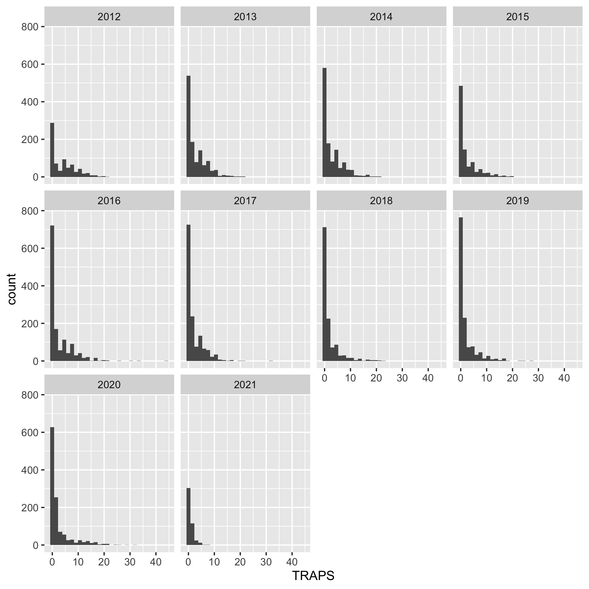
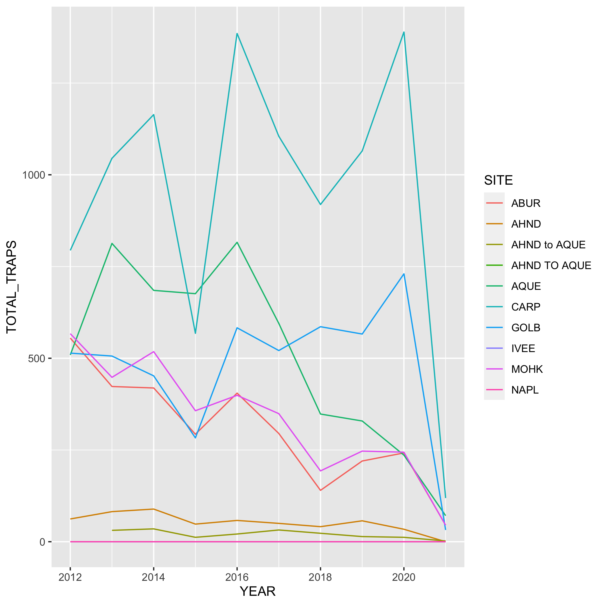
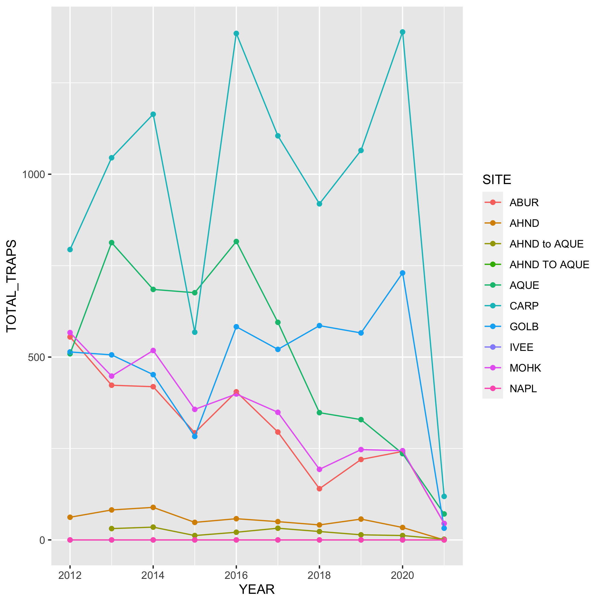
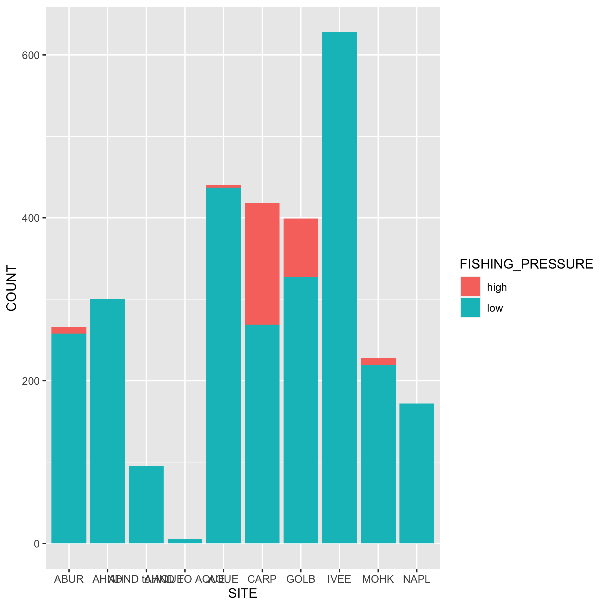

library(readr)
library(dplyr)
library(ggplot2)
library(tidyr)Learning Objectives
- Practice using common cleaning and wrangling functions
- Practice creating plots using common visualization functions in
ggplot - Practice saving and sharing data visualizations
- Practice Git and GitHub workflow and collaborating with a collegue
Acknowledgements
These exercises are adapted from Allison Horst’s EDS 221: Scientific Programming Essentials Course for the Bren School’s Master of Environmental Data Science program.
About the data
These exercises will be using data on abundance, size, and trap counts (fishing pressure) of California spiny lobster (Panulirus interruptus) and were collected along the mainland coast of the Santa Barbara Channel by Santa Barbara Coastal LTER researchers (LTER, Reed, and Miller 2022).
10.1 Exercise: Collaborate on an analysis and create a report to publish using GitHub Pages
Setup
- Create a new repository with a partner
- Determine who is the Owner and who is the Collaborator
- The Owner creates a repository on GitHub titled with both your names (i.e. If Angel and Camila were partners, and Angel is the Owner, she would create a repo called
angel-camila)- When creating the repository, add a brief description (i.e. R Practice Session: Collaborating on, Wrangling & Visualizing Data), keep the repo Public, and Initialize the repo with a
READMEfile and an R.gitignoretemplate.
- When creating the repository, add a brief description (i.e. R Practice Session: Collaborating on, Wrangling & Visualizing Data), keep the repo Public, and Initialize the repo with a
- The Owner adds the Collaborator to the repo
- Both the Collaborator and the Owner clone the repo into their RStudio
- Both the Collaborator and the Owner run
git config pull.rebase falsein the Terminal to set theGitdefault strategy forPulling
Step 2 and Step 3 are meant to be completed at the same time. Step 2 is for the Collaborator to complete, and Step 3 is for the Owner to complete.
- Collaborator creates new files for exercise
- The Collaborator creates the following directory:
analysis
- After creating the directories, create the following Quarto Documents and store them in the listed folders:
- Title it: “Owner Analysis”, save it as:
owner-analysis.qmd, and store inanalysisfolder - Title it: “Collaborator Analysis”, save it as:
collaborator-analysis.qmd, and store inanalysisfolder - Title it: “Lobster Report” and save it as:
lobster-report.qmd(do not need to put in a folder)
- Title it: “Owner Analysis”, save it as:
- After creating the files, the Collaborator will
stage (add),commit, write a commit message,pull, andpushthe files to the remote repository (on GitHub) - The Owner
pulls the changes and Quarto Documents into their local repository (their workspace)
- The Collaborator creates the following directory:
- Owner downloads data from the EDI Data Portal SBC LTER: Reef: Abundance, size and fishing effort for California Spiny Lobster (Panulirus interruptus), ongoing since 2012.
- Create two new directories one called
dataand one calledfigs- Note: Git does not track empty directories, so you won’t see
figswhen you push to GitHub
- Note: Git does not track empty directories, so you won’t see
- Download the following data and upload them to the
datafolder:- Time-series of lobster abundance and size
- Time-series of lobster trap buoy counts
- After creating the
datafolder and adding the data, the Owner willstage (add),commit, write a commit message,pull, andpushthe files to the remote repository (on GitHub) - The Collaborator
pulls the changes and data into their local repository (their workspace)
- Create two new directories one called
10.1.1 Explore, clean and wrangle data
For this portion of the exercise, the Owner will be working with the lobster abundance and size data, and the Collaborator will be working with the lobster trap buoy counts data
Questions 1-3 you will be working independently since you’re working with different data frames, but you’re welcome to check in with each other.
Setup
- Open the Quarto Document
owner-analysis.qmd- Check the
YAMLand add your name to theauthorfield - Create a new section with a level 2 header and title it “Exercise: Explore, Clean, and Wrangle Data”
- Check the
- Load the following libraries at the top of your Quarto Document
- Read in the data and store the data frame as
lobster_abundance
lobster_abundance <- read_csv("data/Lobster_Abundance_All_Years_20220829.csv")Look at your data. Take a minute to explore what your data structure looks like, what data types are in the data frame, or use a function to get a high-level summary of the data you’re working with.
Use the Git workflow:
Stage (add) -> Commit -> Pull -> Push- Note: You also want to
Pullwhen you first open a project
- Note: You also want to
10.2 Convert missing values using mutate() and na_if()
Question 1
The variable SIZE_MM uses -99999 as the code for missing values (see metadata or use unique()). This has the potential to cause conflicts with our analyses, so let’s convert -99999 to an NA value. Do this using mutate() and na_if(). Look up the help page to see how to use na_if(). Check your output data using unique().
Answer
lobster_abundance <- lobster_abundance %>%
mutate(SIZE_MM = na_if(SIZE_MM, -99999))10.3 filter() practice
Question 2
Create and store a subset that does NOT include observations from Naples Reef (NAPL). Check your output data frame to ensure that NAPL is NOT in the data frame.
Answer
not_napl <- lobster_abundance %>%
filter(SITE != "NAPL")
Question 3
Create and store a subset with lobsters at Arroyo Quemado (AQUE) AND with a carapace length greater than 70 mm. Check your output.
Answer
aque_70mm <- lobster_abundance %>%
filter(SITE == "AQUE" & SIZE_MM >= 70)
Save your work and use Git
Don’t forget the Git workflow! After you’ve completed the exercises or reached a significant stopping point, use the workflow: Stage (add) -> Commit -> Pull -> Push
Setup
- Open the Quarto Document
collaborator-analysis.qmd- Check the
YAMLand add your name to theauthorfield - Create a new section with a level 2 header and title it “Exercise: Explore, Clean, and Wrangle Data”
- Check the
- Load the following libraries at the top of your Quarto Document.
library(readr)
library(dplyr)
library(ggplot2)
library(tidyr)- Read in the data and store the data frame as
lobster_traps
lobster_traps <- read_csv("data/Lobster_Trap_Counts_All_Years_20210519.csv")Look at your data. Take a minute to explore what your data structure looks like, what data types are in the data frame, or use a function to get a high-level summary of the data you’re working with.
Use the Git workflow:
Stage (add) -> Commit -> Pull -> Push- Note: You also want to
Pullwhen you first open a project
- Note: You also want to
10.4 Convert missing values using mutate() and na_if()
Question 1
The variable TRAPS uses -99999 as the code for missing values (see metadata or use unique()). This has the potential to cause conflicts with our analyses, so let’s convert -99999 to an NA value. Do this using mutate() and na_if(). Look up the help page to see how to use na_if(). Check your output data using unique().
Answer
lobster_traps <- lobster_traps %>%
mutate(TRAPS = na_if(TRAPS, -99999))10.5 filter() practice
Question 2
Create and store a subset that does NOT include observations from Naples Reef (NAPL). Check your output data frame to ensure that NAPL is NOT in the data frame.
Answer
not_napl <- lobster_traps %>%
filter(SITE != "NAPL")
Question 3
Create and store a subset with lobsters at Carpinteria Reef (CARP) AND number of commercial trap floats is greater than 20. Check your output.
Answer
carp_20_traps <- lobster_traps %>%
filter(SITE == "CARP" & TRAPS > 20)
Save your work and use Git
Don’t forget the Git workflow! After you’ve completed the exercises or reached a significant stopping point, use the workflow: Stage (add) -> Commit -> Pull -> Push
10.5.1 Create visually appealing and informative data visualization
Setup
- Stay in the Quarto Document
owner-analysis.qmdand create a new section with a level 2 header and title it “Exercise: Data Visualization”
Structure of the data visualization exercises:
Questions 7-9 will have you create the necessary subsets to create the data visualizations, as well as the basic code to create a visualization.
Question 10, return to the data visualization code you’ve written and add styling code to it. For this exercise, only add styling code to the visualization you want to include in the
lobster-report.qmd(start with just one plot and if there’s time add styling code to another plot).Lastly, save the final visualizations to the
figsfolder before collaborating on thelobster-report.qmd.
Question 7
Create a multi-panel plot of lobster carapace length (SIZE_MM) using ggplot(), geom_histogram(), and facet_wrap(). Use the variable SITE in facet_wrap(). Use the object lobster_abundance.
Answer
ggplot(data = lobster_abundance, aes(x = SIZE_MM)) +
geom_histogram() +
facet_wrap(~SITE)Plots

Question 8
Create a line graph of the number of total lobsters observed (y-axis) by year (x-axis) in the study, grouped by SITE.
First, you’ll need to create a new dataset subset called lobsters_summarize:
- Group the data by
SITEANDYEAR - Calculate the total number of lobsters observed using
count()
Answer
lobsters_summarize <- lobster_abundance %>%
group_by(SITE, YEAR) %>%
summarize(COUNT = n())Next, create a line graph using ggplot() and geom_line(). Use geom_point() to make the data points more distinct, but ultimately up to you if you want to use it or not. We also want SITE information on this graph, do this by specifying the variable in the color argument. Where should the color argument go? Inside or outside of aes()? Why or why not?
Answer
# line plot
ggplot(data = lobsters_summarize, aes(x = YEAR, y = COUNT)) +
geom_line(aes(color = SITE))
# line and point plot
ggplot(data = lobsters_summarize, aes(x = YEAR, y = COUNT)) +
geom_point(aes(color = SITE)) +
geom_line(aes(color = SITE)) Plots


Question 9
- Go back to your visualization code and add some styling code (aka make your plots pretty!). Again, start with one plot and if there’s time add styling code to additional plots. Here’s a list of functions to help you get started (this is not an exhaustive list!) or revisit the data visualization lesson:
labs(): modifying axis, legend and plot labelstheme_(): add a complete theme to your plot (i.e.theme_light())theme(): use to customize non-data components of a plot. We’ve listed out some parameters here, but run?themeto see the full list (there’s a lot of customization you can do!)axis.title.ypanel.backgroundplot.backgroundpanel.grid.major.*text
scale_*_date(): use with dates and update breaks, limits, and labelsscale_*_continuous(): use with continuous variables and update breaks, limits, and labelsscale_*_discrete(): use with discrete variables and update breaks, limits, and labelsscalespackage: use this within the above scale functions and you can do things like add percents to axes labelsgeom_()within a geom function you can modify:fill: updates fill colors (e.g. column, density, violin, & boxplot interior fill color)color: updates point & border line colors (generally)shape: update point stylealpha: update transparency (0 = transparent, 1 = opaque)size: point size or line widthlinetype: update the line type (e.g. “dotted”, “dashed”, “dotdash”, etc.)
- Once you’re happy with how your plot looks, assign it to an object, and save it to the
figsdirectory usingggsave()
Save your work and use Git
Don’t forget the Git workflow! After you’ve completed the exercises or reached a significant stopping point, use the workflow: Stage (add) -> Commit -> Pull -> Push
Setup
- Stay in the Quarto Document
collaborator-analysis.qmdand create a new section with a level 2 header and title it “Exercise: Data Visualization”
Structure of the data visualization exercises:
- Questions 7-9 will have you create the necessary subsets to create the data visualizations, as well as the basic code to create a visualization.
- Question 10, return to the data visualization code you’ve written and add styling code to it. For this exercise, only add styling code to the visualization you want to include in the
lobster-report.qmd(start with just one plot and if there’s time add styling code to another plot). - Lastly, save the final visualizations to the
figsfolder before collaborating on thelobster-report.qmd.
Question 7
Create a multi-panel plot of lobster commercial traps (TRAPS) grouped by year, using ggplot(), geom_histogram(), and facet_wrap(). Use the variable YEAR in facet_wrap(). Use the object lobster_traps.
Answer
ggplot(data = lobster_traps, aes(x = TRAPS)) +
geom_histogram() +
facet_wrap( ~ YEAR)Plots

Question 8
Create a line graph of the number of total lobster commercial traps observed (y-axis) by year (x-axis) in the study, grouped by SITE.
First, you’ll need to create a new dataset subset called lobsters_traps_summarize:
- Group the data by
SITEANDYEAR - Calculate the total number of lobster commercial traps observed using
sum(). Look upsum()if you need to. Call the new columnTOTAL_TRAPS. Don’t forget aboutNAshere!
Answer
lobsters_traps_summarize <- lobster_traps %>%
group_by(SITE, YEAR) %>%
summarize(TOTAL_TRAPS = sum(TRAPS, na.rm = TRUE))Next, create a line graph using ggplot() and geom_line(). Use geom_point() to make the data points more distinct, but ultimately up to you if you want to use it or not. We also want SITE information on this graph, do this by specifying the variable in the color argument. Where should the color argument go? Inside or outside of aes()? Why or why not?
Answer
# line plot
ggplot(data = lobsters_traps_summarize, aes(x = YEAR, y = TOTAL_TRAPS)) +
geom_line(aes(color = SITE))
# line and point plot
ggplot(data = lobsters_traps_summarize, aes(x = YEAR, y = TOTAL_TRAPS)) +
geom_point(aes(color = SITE)) +
geom_line(aes(color = SITE))Plots


Question 9
Create a bar graph that shows the amount of high and low fishing pressure of lobster commercial traps at each SITE from 2019-2021. Note: The high and low fishing pressure metrics are completely made up and are not based on any known facts.
First, you’ll need to create a new dataset subset called lobster_traps_fishing_pressure:
filter()for the years 2019, 2020, and 2021- Add a new column called
FISHING_PRESSUREthat contains the values “high” or “low”. A “high” fishing pressure has exactly or more than 8 traps, and a “low” fishing pressure has less than 8 traps. Usemutate()andif_else(). Check your output - Calculate the number of “high” and “low” observations using
group()andsummarize(). Check your output - Remove the
NAvalues from the subsetted data. Hint: check outdrop_na(). Check your output
Answer
lobster_traps_fishing_pressure <- lobster_traps %>%
filter(YEAR %in% c(2019, 2020, 2021)) %>%
mutate(FISHING_PRESSURE = if_else(TRAPS >= 8, true = "high", false = "low")) %>%
group_by(SITE, FISHING_PRESSURE) %>%
summarize(COUNT = n()) %>%
drop_na()Next, create a bar graph using ggplot() and geom_bar(). Note that geom_bar() automatically creates a stacked bar chart. Try using the argument position = "dodge" to make the bars side by side. Pick which bar position you like best.
Answer
# bar plot
ggplot(data = lobster_traps_fishing_pressure, aes(x = SITE, y = COUNT, fill = FISHING_PRESSURE)) +
geom_col()
# dodged bar plot
ggplot(data = lobster_traps_fishing_pressure, aes(x = SITE, y = COUNT, fill = FISHING_PRESSURE)) +
geom_col(position = "dodge")Plots


Question 10
- Go back to your visualization code and add some styling code (aka make your plots pretty!). Again, start with one plot and if there’s time add styling code to additional plots. Here’s a list of functions to help you get started (this is not an exhaustive list!) or revisit the data visualization lesson:
labs(): modifying axis, legend and plot labelstheme_(): add a complete theme to your plot (i.e.theme_light())theme(): use to customize non-data components of a plot. We’ve listed out some parameters here, but run?themeto see the full list (there’s a lot of customization you can do!)axis.title.ypanel.backgroundplot.backgroundpanel.grid.major.*text
scale_*_date(): use with dates and update breaks, limits, and labelsscale_*_continuous(): use with continuous variables and update breaks, limits, and labelsscale_*_discrete(): use with discrete variables and update breaks, limits, and labelsscalespackage: use this within the above scale functions and you can do things like add percents to axes labelsgeom_()within a geom function you can modify:fill: updates fill colors (e.g. column, density, violin, & boxplot interior fill color)color: updates point & border line colors (generally)shape: update point stylealpha: update transparency (0 = transparent, 1 = opaque)size: point size or line widthlinetype: update the line type (e.g. “dotted”, “dashed”, “dotdash”, etc.)
- Once you’re happy with how your plot looks, assign it to an object, and save it to the
figsdirectory usingggsave()
Save your work and use Git
Don’t forget the Git workflow! After you’ve completed the exercises or reached a significant stopping point, use the workflow: Stage (add) -> Commit -> Pull -> Push
10.5.2 Collaborate on a report and publish using GitHub pages
The final step! Time to work together again. Collaborate with your partner in lobster-report.qmd to create a report to publish to GitHub pages.
Make sure your Quarto Document is well organized and includes the following elements:
- citation of the data
- brief summary of the abstract (i.e. 1-2 sentences) from the EDI Portal
- Owner analysis and visualizations (you choose which plots you want to include)
- add alternative text to your plots
- plots can be added either with the data visualization code or with Markdown syntax - it’s up to you if you want to include the code or not.
- Collaborator analysis and visualizations (you choose which plots you want to include)
- add alternative text to your plots
- plots can be added either with the data visualization code or with Markdown syntax - it’s up to you if you want to include the code or not.
Finally, publish on GitHub pages (from Owner’s repository). Refer back to Chapter 11 for steps on how to publish using GitHub pages.
10.6 Bonus: Add marine protected area (MPA) designation to the data
The sites IVEE and NAPL are marine protected areas (MPAs). Add this designation to your data set using a new function called case_when(). Then create some new plots using this new variable. Does it change how you think about the data? What new plots or analysis can you do with this new variable?
Use the object lobster_abundance and add a new column called DESIGNATION that contains “MPA” if the site is IVEE or NAPL, and “not MPA” for all other values.
Answer
lobster_mpa <- lobster_abundance %>%
mutate(DESIGNATION = case_when(
SITE %in% c("IVEE", "NAPL") ~ "MPA",
SITE %in% c("AQUE", "CARP", "MOHK") ~ "not MPA"
))Use the object lobster_traps and add a new column called DESIGNATION that contains “MPA” if the site is IVEE or NAPL, and “not MPA” for all other values.
Answer
lobster_traps_mpa <- lobster_traps %>%
mutate(DESIGNATION = case_when(
SITE %in% c("IVEE", "NAPL") ~ "MPA",
SITE %in% c("AQUE", "CARP", "MOHK") ~ "not MPA"
))
LTER, Santa Barbara Coastal, Daniel C Reed, and Robert J Miller. 2022. “SBC LTER: Reef: Abundance, Size and Fishing Effort for California Spiny Lobster (Panulirus Interruptus), Ongoing Since 2012.” Environmental Data Initiative. https://doi.org/10.6073/PASTA/25AA371650A671BAFAD64DD25A39EE18.